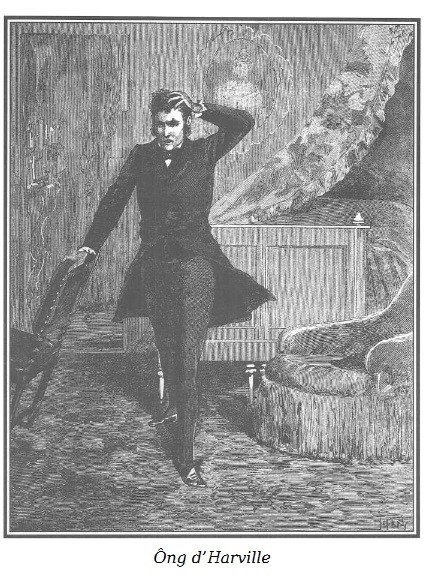

Mới sáng sớm, ông d’Harville đã bấm chuông gọi người hầu phòng.
Ông già Joseph bước vào, rất ngạc nhiên thấy ông chủ đang lẩm nhẩm một điệu nhạc đi săn, dấu hiệu hiếm có và rất chắc chắn là ông d’Harville đang vui vẻ.
– A, thưa ngài Hầu tước, – người đầy tớ trung thành cảm động nói – giọng ngài hay thế… Rất tiếc, ngài không hay hát!
– Thật ư, lão Joseph, ta mà tốt giọng? – Ông d’Harville cười.
– Ngài Hầu tước dù có giọng ồ ồ hay the thé thì tôi vẫn thấy hay.
– Thôi đi, lão nịnh ta.
– Thật mà! Thưa ngài Hầu tước, khi ngài hát, đó là dấu hiệu ngài đang vui. Lúc đó tiếng hát của ngài đối với tôi là khúc nhạc hay nhất.
– Như thế thì lão Joseph ơi, hãy chuẩn bị dỏng tai lên.
– Ngài nói gì vậy?
– Lão có thể hằng ngày được nghe thứ nhạc hay mà lão rất háo hức.
– Như vậy là ngày nào ngài cũng vui, hở ngài Hầu tước? – Joseph chắp hai tay, vẻ mặt rạng rỡ.
– Ngày nào cũng vui, lão Joseph ạ. Đúng, không sầu muộn nữa. Ta có thể nói với lão điều đó, và chỉ với mình lão thôi, người thân tín mà ta có thể trao mối ưu phiền. Ta đang ở tột đỉnh của hạnh phúc. Vợ ta là một nàng tiên đầy lòng nhân ái. Nàng đã xin lỗi ta vì sự ghẻ lạnh trước đây. Ghẻ lạnh, lão có đoán ra được không? Do ghen tuông!
– Do ghen tuông?
– Đúng, những điều ngờ vực thật vô lý vì những lá thư nặc danh.
– Thật quá tệ!
– Lão hiểu chứ, phụ nữ họ rất tự ái. Chỉ thế thôi là đủ chia rẽ chúng tôi. May thay, chiều qua nàng đã thẳng thắn phân trần với ta. Ta đã làm cho nàng hết hiểu lầm. Không thể nói để lão biết nàng ấy vui như thế nào, bởi nàng yêu ta! Nàng yêu ta! Sự ghẻ lạnh đối với ta làm khổ sở cả hai người. Cuối cùng, tình trạng chia lìa đau khổ đã chấm dứt. Lão thử nghĩ xem ta sung sướng dường nào!
– Thật vậy sao? – Joseph mắt đẫm lệ. – Thưa Hầu tước, đúng thế! Ngài sẽ được sung sướng mãi mãi bởi ngài chỉ thiếu có tình yêu của phu nhân mà thôi, hay nói đúng hơn chỉ sự xa cách của phu nhân mới làm ngài đau khổ, như ngài đã nói với tôi.
– Ông lão Joseph tội nghiệp, ta còn có thể nói điều này với ai khác được? Chẳng phải ông còn biết một điều bí mật đáng buồn hơn nữa hay sao? Nhưng thôi đừng nói đến chuyện buồn. Ngày hôm nay đẹp quá! Chắc lão thấy ta khóc! Ta yếu đuối quá, phải không?
– Nào, nào, thưa Hầu tước, ngài có thể khóc vì vui được chứ, ngài đã khóc vì đau khổ nhiều rồi. Và tôi nữa, có phải tôi cũng khóc như ngài? Có đem mười năm tuổi thọ của tôi đổi lấy nước mắt này, tôi cũng không đổi. Tôi chỉ sợ một điều là không thể tự ngăn được mình quỳ dưới chân bà Hầu tước lần này, khi gặp lại bà.
– Lão già điên, lão cũng mất trí như chủ của lão. Ta… ta cũng sợ một điều…
– Điều gì hở trời?
– Sợ rằng niềm vui ấy không bền. Ta sung sướng quá! Ta còn thiếu gì đây?
– Không, không, thưa Hầu tước, hoàn toàn không thiếu gì cả.
– Chính vì thế, ta không tin ở những hạnh phúc quá tuyệt vời, quá đầy đủ.
– Hỡi ơi, nếu chỉ có thế, thưa Hầu tước, nhưng không, tôi không dám.
– Ta hiểu lão. Này, ta nghĩ rằng lão sợ hão huyền thôi! Sự biến đổi do hạnh phúc mang lại trong ta mạnh và sâu sắc đến nỗi ta chắc rằng mình được cứu sống!
– Như thế nào?
– Ông thầy thuốc của ta chẳng đã trăm lần nói với ta rằng nhiều khi một sự xúc động tinh thần mạnh mẽ có thể gây ra hoặc chữa lành căn bệnh quái ác này. Tại sao những xúc động hạnh phúc lại không cứu sống được ta?
– Nếu ngài tin điều đó, thưa Hầu tước, thì điều đó sẽ xảy ra. Điều đó đang xảy ra. Ngài đã lành bệnh! Vậy ngày hôm nay là ngày ngài được ban phước lành. A, như ngài đã nói, bà Hầu tước là một thiên thần từ thượng giới xuống, và tôi cũng gần như bắt đầu thấy sợ, thưa ngài. Nhiều sự tốt lành quá trong một ngày, tôi cứ nghĩ, để ngài yên tâm, phải có một tí gì không vui. Lạy Chúa! Tôi biết việc của ngài…
– Thế nào?
– Một người bạn của ngài đã bị đâm một mũi kiếm, thật rõ đúng lúc và may thay không nặng lắm. Thôi cũng được, để ngài buồn một tí, cho ngày quá đẹp đẽ này phải có một tì vết nhỏ như ngài muốn. Giá vết thương nặng hơn chút thì càng hay, nhưng thôi, được sao biết vậy.
– Lão im đi có được không? Lão nói ai vậy?
– Tôi nói về Công tước de Lucenay.
– Ông ta bị thương?
– Một vết xước ở cánh tay. Ngài Công tước đến thăm ông nhà hôm qua. Ngài còn nói có thể sáng nay lại đến dùng trà với ông nhà.
– Khổ, ông de Lucenay. Sao lão không nói ngay với ta?
– Chiều qua tôi không được gặp ngài.
Sau một hồi suy nghĩ, ông d’Harville nói tiếp:
– Lão nói đúng! Chút phiền muộn nhẹ nhàng ấy chắc sẽ làm hài lòng số mệnh cả ghen. Ta chợt nảy ra một ý, sáng nay ta sẽ ứng biến ra một bữa tiệc dành cho đàn ông, tất cả đều là bạn của de Lucenay để mừng kết thúc may mắn của cuộc đấu kiếm. Không ngờ có cuộc họp này, chắc ông ta sẽ rất thích.
– Hay quá, thưa Hầu tước, niềm vui vạn tuế, phải tranh thủ thời gian. Thưa, có bao nhiêu thực khách để tôi lệnh cho đầu bếp?
– Sáu người, trong phòng ăn nhỏ mùa đông.
– Và thiệp mời?
– Ta sẽ viết. Tên trông coi tàu ngựa sẽ cưỡi ngựa mang đi ngay. Hãy còn sớm, chắc sẽ gặp được đủ mọi người. Bấm chuông đi.
Joseph bấm chuông.
Ông d’Harville bước vào phòng làm việc và viết những lá thư sau, chỉ khác nhau ở tên người được mời.
“Bạn… thân mến,
Xin thông báo một bữa tiệc đột xuất. De Lucenay sẽ đến ăn trưa với tôi. Ông ấy định chỉ có hai chúng tôi với nhau. Mong bạn vui lòng tặng cho ông ấy niềm vui bất ngờ, đến với tôi, cùng với một vài bạn khác mà tôi cũng sẽ gửi giấy mời.
Xin đúng hẹn, mười hai giờ.
A. D’HARVILLE.”
Một người hầu bước vào.
– Cho một người cưỡi ngựa mang ngay những lá thư này đi. – Ông d’Harville nói, rồi quay sang bảo Joseph. – Ghi các địa chỉ sau đây: “Tử tước de Saint-Remy”, de Lucenay không thể thiếu được ông ta – ông d’Harville tự nhủ. – “Ông de Montville”, bạn đồng hành của Công tước; “Huân tước Douglas”, người chơi bài whist của ông ta; “Nam tước Sezannes”, bạn thời thơ ấu… Viết xong chưa?
– Thưa, xong!
– Đem những thư này đi, không được chậm một phút. A, Philippe, mời ông Doublet đến nói chuyện với ta.
Philippe đi ra.
– Có việc gì thế? – Ông d’Harville hỏi Joseph đang trố mắt nhìn mình.
– Tôi chưa hết lạ lùng, thưa ngài! Tôi chưa bao giờ thấy ngài sung sức, vui khỏe như vậy. Thường ngày da ngài xanh, hôm nay trông ngài hồng hào, mắt long lanh.
– Hạnh phúc, chỉ có hạnh phúc thôi, lão Joseph ạ. À này, lão phải giúp ta việc bí mật này. Lão hãy tìm cô Juliette mà ta biết, là người trông coi những viên kim cương của vợ ta.
– Vâng, thưa Hầu tước, đúng là cô Juliette phụ trách việc đó. Cách đây chưa đến tám ngày, tôi có giúp cô ta lau chùi những viên kim cương ấy.
– Lão sẽ hỏi cô ta tên và địa chỉ người thợ kim hoàn, nhưng cô ta không được nói gì với bà Hầu tước cả!
– A, tôi hiểu, thưa ngài. Một tặng phẩm bất ngờ.
– Nhanh lên! Kìa, ông Doublet.
Thật thế, ông quản gia bước vào, đúng lúc ông Joseph lui ra.
– Tôi hân hạnh được ngài Hầu tước gọi.
– Ông Doublet thân mến, tôi sẽ làm ông hoảng đấy! – Ông d’Harville cười. – Tôi sẽ làm ông kêu to lên vì tuyệt vọng.
– Tôi ạ, thưa Hầu tước?
– Ông.
– Tôi sẽ làm hết sức mình để vừa ý ngài.
– Ông Doublet ạ, tôi sẽ tiêu nhiều tiền, rất nhiều tiền.
– Chẳng sao cả, thưa Hầu tước, điều đó tôi làm được. Lạy Chúa! Tôi làm được.
– Từ lâu tôi có ý định xây dựng tiếp. Vấn đề là thêm một cái hành lang ra vườn bên cánh phải của biệt thự. Sau khi đắn đo trước việc làm điên rồ ấy, và cũng chưa bao giờ nói ông biết, tôi đi đến quyết định. Hôm nay ông phải báo cho kiến trúc sư của tôi biết để đến bàn với tôi về các đồ án. Nào, ông Doublet, ông không rền rĩ vì việc tiêu pha này chứ?
– Tôi cam đoan với ngài là sẽ không rền rĩ.
– Hành lang ấy sẽ dành cho các buổi lễ hội. Tôi muốn nó sẽ được dựng lên như có phép màu. Nhưng phép màu thì rất đắt, phải bán đi mười lăm hoặc hai mươi nghìn bảng tiền tô tức mới đủ chi, bởi tôi muốn công việc bắt đầu càng sớm càng tốt.
– Rất hợp lý, tốt nhất là nên tận hưởng ngay. Tôi thường tự bảo: “Ông Hầu tước chẳng còn thiếu gì, có chăng là một ham thích nào đó…” Xây dựng có cái hay là nhà cửa vẫn còn. Còn tiền thì ngài khỏi lo. Lạy Chúa! Nếu ngài có cái ý ngông xây hành lang thì ngài làm được.
Joseph trở lại.
– Thưa Hầu tước, đây là địa chỉ của người thợ kim hoàn. Ông ta tên là Baudoin. – Joseph nói với ông d’Harville.
– Ông Doublet, phiền ông đến chỗ người thợ kim hoàn này, bảo trong vòng một tiếng đồng hồ, đem đến một cái vòng nạm kim cương trị giá khoảng hai nghìn louis. Phụ nữ không bao giờ có thừa đá quý, ngày nay người ta còn may cả vào áo. Ông sắp xếp để thanh toán với người thợ kim hoàn.
– Vâng, thưa Hầu tước. Tôi không rầu rĩ vì chuyện này đâu. Kim cương, cũng như nhà cửa, chúng còn đó. Vả lại, tặng phẩm bất ngờ này chắc sẽ làm vui lòng bà Hầu tước, chưa kể là ông cũng vui. Đúng như tôi đã nói hôm trước, không có cuộc đời nào đẹp như cuộc đời của ngài Hầu tước.
Ông d’Harville mỉm cười:
– Lời khen của ông Doublet bao giờ cũng rất đúng lúc.
– Thưa Hầu tước, nó chỉ có giá trị duy nhất ấy thôi, và sở dĩ như vậy vì nó xuất phát tự đáy lòng. Tôi chạy đến ông thợ kim hoàn đây. – Ông Doublet nói.
Và ông ta đi ra.
Còn lại một mình, d’Harville đi đi lại lại trong phòng, khoanh tay trước ngực, mắt đăm đăm, đầy suy tư.

.Vẻ mặt ông ta chợt biến đổi. Nó không biểu hiện sự hài lòng mà viên quản gia và lão đầy tớ vừa lầm tưởng, mà là một quyết định lặng lẽ, âm thầm, lạnh lùng.
Sau khi đi lại một hồi, ông ta nặng nề ngồi xuống như gục dưới sức nặng của khổ đau. Ông ta chống hai cùi tay xuống bàn, lấy hai bàn tay ôm trán.
Một lát sau, ông ta chợt đứng dậy, lau giọt lệ trên khóe mắt đỏ hoe và cố gắng nói:
– Nào, can đảm lên, nào!
Rồi ông ta viết cho vài người về những chuyện lặt vặt. Nhưng trong những thư đó, ông ta hẹn gặp hoặc hoãn các cuộc hẹn gặp lại sau đó vài ngày.
Ông Hầu tước viết những thư ấy xong thì Joseph trở về. Lão vui đến nỗi lão quên mất mình và lầm rầm hát. Ông chủ mỉm cười:
– Này Joseph, giọng lão cũng hay đấy!
– Thưa Hầu tước, quả thật tôi chẳng để ý đến. Trong lòng tôi nó hát to đến nỗi phát thành tiếng.
– Lão đem thư này ra bưu điện cho ta!
– Thưa Hầu tước, vâng. Nhưng lát nữa ngài tiếp các vị khách ở đâu?
– Tại đây, trong phòng làm việc của ta, họ sẽ hút thuốc sau bữa ăn, và mùi khói thuốc sẽ không xông đến phòng bà d’Harville.
Vừa lúc đó, có tiếng xe lăn trong sân của biệt thự. Ông Joseph nói:
– Bà Hầu tước lại sắp đi. Sáng nay bà đòi đem ngựa ra rất sớm.
– Lão chạy lại nói với bà ghé qua đây trước khi đi.
– Vâng, thưa Hầu tước.
Người hầu vừa đi khỏi, d’Harville lại gần tấm gương, ngắm mình rất kĩ. Ông ta nói, giọng trầm trầm:
– Được, được, đúng thế! Má hồng hào, cái nhìn sắc sảo. Vui hay lên cơn sốt đều được! Miễn là người ta lầm tưởng. Nào, cười nụ đi. Biết bao nhiêu kiểu cười nụ. Ai phân biệt được thật giả? Ai xuyên qua được cái mặt nạ dối trá này và nói: “Cái cười này giấu một nỗi thất vọng đen tối, niềm vui ồn ào này giấu một ý nghĩ chết chóc”? Ai đoán ra được điều đó? Không ai. May thay, không ai… Có thật là không ai? Ồ, có chứ! Tình yêu, nó không lầm đâu. Bản năng sẽ soi rọi nó. Nhưng tôi nghe có tiếng vợ tôi… vợ tôi! Nào, vào vai đi, tên hề kinh khủng.
Clémence bước vào phòng của d’Harville.
– Chào anh Albert thân thiết của em. – Nàng đưa bàn tay, giọng dịu dàng êm ái. Và nhận thấy vẻ mặt tươi cười của chồng. – Anh có gì vui? Trông anh thật rạng rỡ!
– Bởi khi em bước vào, anh đang nghĩ đến em, cô em thân mến ạ! Hơn nữa, anh đang có một quyết định tốt đẹp!
– Em không lạ đâu!
– Sự việc hôm qua, sự độ lượng đáng khâm phục của em, cách xử sự cao thượng của Hoàng thân, tất cả làm anh phải suy nghĩ và chuyển theo tư tưởng của em. Chuyển hoàn toàn và hối tiếc những ý tưởng chống đối vô ích của anh lúc đó mà em đã miễn thứ cho, dù chỉ để làm duyên, phải không? – Ông d’Harville mỉm cười, nói thêm. – Anh tin chắc em sẽ không tha thứ cho anh vì đã từ chối quá dễ dàng tình yêu của em.
Phu nhân d’Harville kêu lên:
– Ôi, lời nói của anh! Sự thay đổi đáng mừng làm sao! A, em biết mà, tìm đến trái tim anh, lý trí của anh, anh sẽ hiểu em. Bây giờ em không nghi ngờ tương lai nữa.
– Cả anh cũng thế, Clémence ạ, anh cam đoan là thế. Đúng, từ cái đêm anh đã đem đến một quyết định tương lai mà trước đây đối với anh mơ hồ và tối tăm, giờ đã sáng ra, đơn giản một cách lạ kỳ.
– Lẽ đương nhiên, anh ạ. Ngày nay chúng ta cùng đi đến một mục đích, dựa vào nhau trên tình anh em. Cuối đoạn đường này chúng ta lại gặp nhau, vẫn y hệt như hôm nay. Tình cảm ấy là không suy chuyển được. Cuối cùng em muốn anh được sung sướng. Và nhất định sẽ là như thế, vì em đã đặt nó vào đây. – Clémence nói, đặt ngón tay vào trán. Rồi cũng với một vẻ duyên dáng đáng yêu, nàng hạ bàn tay xuống phía trái tim. – Không, em lầm, ở đây kia. Mong rằng ý nghĩ đó thức tỉnh ngày đêm, cho anh và cũng cho em. Và, thưa ông anh của em, anh sẽ thấy một tấm lòng tận tụy sẽ bền bỉ chừng nào.
– Clémence thân yêu! – D’Harville trả lời, cố nén sự xúc động.
Sau một lúc im lặng, ông ta vui vẻ nói tiếp:
– Anh mời em qua đây trước khi em đi để báo cho em biết, sáng nay anh không thể dùng trà với em. Anh có mời vài người khác ăn trưa. Một bữa ăn đột xuất để mừng cái kết thúc may mắn trong cuộc đấu kiếm của cậu de Lucenay, cậu ta chỉ bị địch thủ làm bị thương rất nhẹ thôi.
Phu nhân d’Harville đỏ mặt, nghĩ đến nguyên nhân của cuộc đấu kiếm. Một câu lố bịch nói ra trước mặt nàng giữa de Lucenay với gã Charles Robert.
Kỷ niệm này xót xa đối với Clémence, nó nhắc lại một sai lầm mà nàng phải hổ thẹn.
Để thoát khỏi ám ảnh nặng nề đó, nàng nói với chồng:
– Anh xem sự ngẫu nhiên có lạ lùng không? Ông de Lucenay đến ăn trưa với anh; còn em, có lẽ sáng nay em sẽ đến nhà bà de Lucenay, vì em có nhiều điều cần nói với bà ấy về hai người em muốn che chở mà vẫn chưa biết họ là ai. Từ đó em định đến nhà lao Saint-Lazare cùng với bà de Blainval. Anh không biết tất cả những tham vọng của em đâu. Giờ đây em đang tìm cách để len vào công việc cải tạo các nữ tù nhân trẻ.
Ông d’Harville mỉm cười:
– Ham muốn của em thực không có giới hạn. – Ông ta nói thêm với một xúc động đau đớn, mặc dù rất cố gắng nhưng vẫn lộ ra ít nhiều. – Như vậy, anh sẽ không gặp lại em hôm nay nữa? – Ông vội hỏi.
– Có điều gì phật ý anh, nếu em phải đi sớm? – Clémence hỏi gấp, ngạc nhiên vì giọng nói khác lạ của chồng. – Nếu anh muốn, em có thể hoãn cuộc đi thăm bà de Lucenay.
Ông Hầu tước suýt nữa thì tự bộc lộ. Ông ta nói tiếp, giọng thật dịu dàng:
– Phải, cô em bé bỏng của anh, anh không muốn thấy em ra đi, cũng như nóng ruột mong em chóng về. Đó là những tật xấu anh không bao giờ sửa được.
– Như vậy là tốt, anh ạ, nếu không em sẽ rất buồn.
Một tiếng chuông reo trong biệt thự báo có khách đến. Phu nhân d’Harville nói:
– Chắc chắn có khách của anh đến. Xin phép anh. Này, tối nay anh làm gì? Nếu anh chưa có ý định, em yêu cầu anh đưa em đến rạp Nghệ thuật Ý. Có lẽ bây giờ anh càng thích âm nhạc hơn!
– Rất vui lòng làm theo ý em.
– Anh có đi đâu không? Em có gặp lại anh trước bữa ăn tối không?
– Anh không đi đâu cả. Em sẽ gặp lại anh ở đây.
– Thế thì khi về, em sẽ gặp anh để biết bữa tiệc của các anh có vui không.
– Tạm biệt Clémence.
– Tạm biệt anh. Hẹn gặp lại! Em để anh hoàn toàn tự do, chúc anh mọi thứ ngông cuồng thật vui, anh nhé!
Sau khi thân ái bắt tay chồng, Clémence đi ra một cửa, trước khi de Lucenay bước vào bằng một cửa khác.
– Nàng chúc ta mọi thứ ngông cuồng. Nàng buộc ta phải vui. Trong tiếng nói giã từ, trong tiếng kêu cuối cùng của hồn ta còn hấp hối, trong lời nói của cuộc chia ly cuối cùng và mãi mãi, nàng đã hiểu ra, “hẹn gặp lại”. Và nàng ra đi bình tĩnh, tươi cười… Như vậy là ta đã khéo giấu. Trời, không ngờ là ta đóng kịch giỏi đến thế. Nhưng mà, kìa ông de Lucenay…